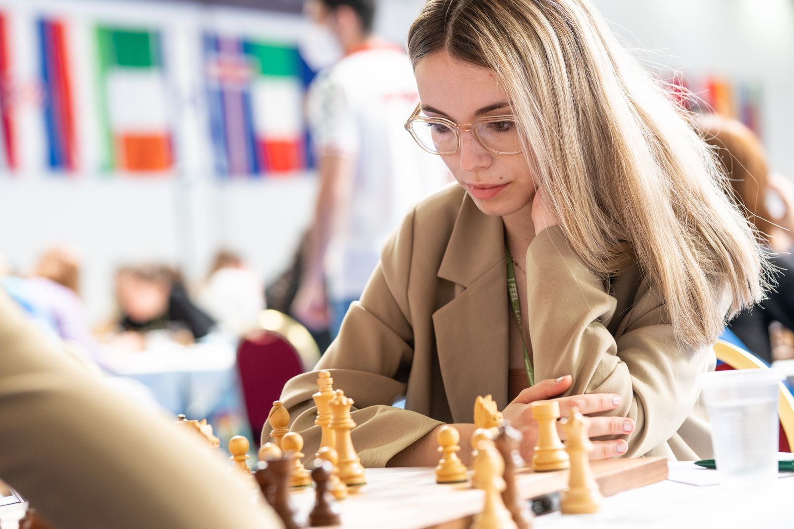

¿Qué es el ajedrez?
El ajedrez siempre se ha considerado una actividad intelectual, de un grupo selecto, de personas que dominan el campo de las matemáticas. Sin embargo, este proyecto de ajedrez pretende romper ese mito. El ajedrez es un deporte que en la actualidad se encuentra en auge, diferentes acontecimientos, fenómenos sociales e incluso culturales han propiciado a crear un entorno en el que miles de ajedrecistas practican, disfrutan e incluso viven de este deporte. Se trata de una actividad completa, un deporte, un arte, que combina sinérgicamente competencias de las cuales todas las personas saldrían beneficiadas si lo practicasen. Dichas competencias son: Desarrollo de la atención y concentración, habilidades de comunicación y socialización, memoria… En resumen, el Ajedrez es una herramienta que a diferencia de lo que se pensaba en antaño, desarrolla fundamentalmente la Inteligencia emocional, actuando como un vehículo para socializar y juntar no solo a la juventud sino a personas de todas las edades.
¿Quiénes somos?
Somos una asociación apasionada por el ajedrez, comprometida con promover...
Nuestras metas
Como hemos mencionado el ajedrez en la actualidad tiene miles de aficionados que lo practican diariamente. Ante este hecho nos podríamos preguntar el lugar donde se lleva a cabo esta actividad. Tristemente la respuesta es únicamente Internet. En prácticamente toda España, incluyendo Murcia, no tenemos aún los suficientes medios para hacer del ajedrez una actividad cotidiana y que se pudiera practicar en cualquier ámbito. Este hecho lleva a que muchas personas interesadas en el juego acaben perdiendo la ilusión por el mismo o simplemente lo practiquen a través del ordenador, condenándolos a eliminar ese componente social tan importante que previamente se ha explicado. Ante esa problemática nace este proyecto, como una iniciativa a buscar ese cambio. Queremos ser un Espacio en Puente Tocinos donde personas de todas las edades, jóvenes especialmente, puedan practicar, aprender y conocer personas que los nutran en este y otros ámbitos